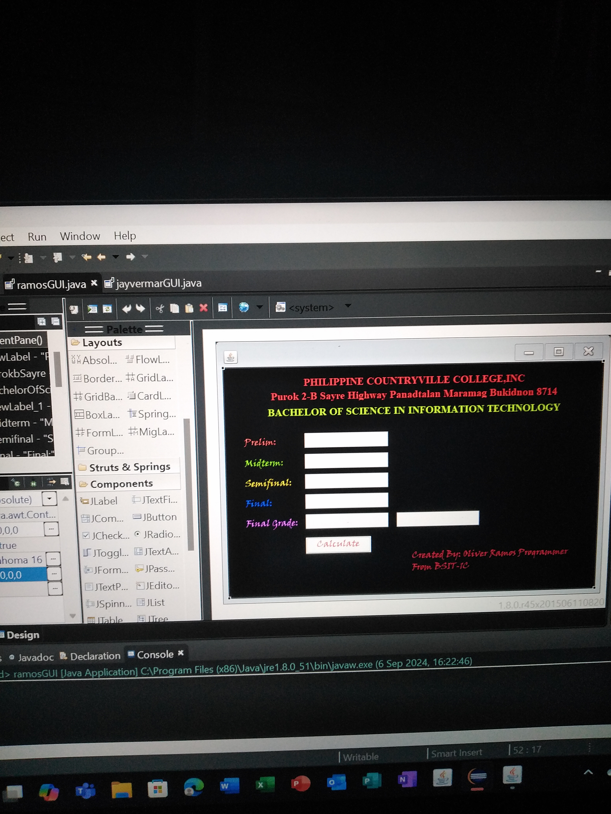
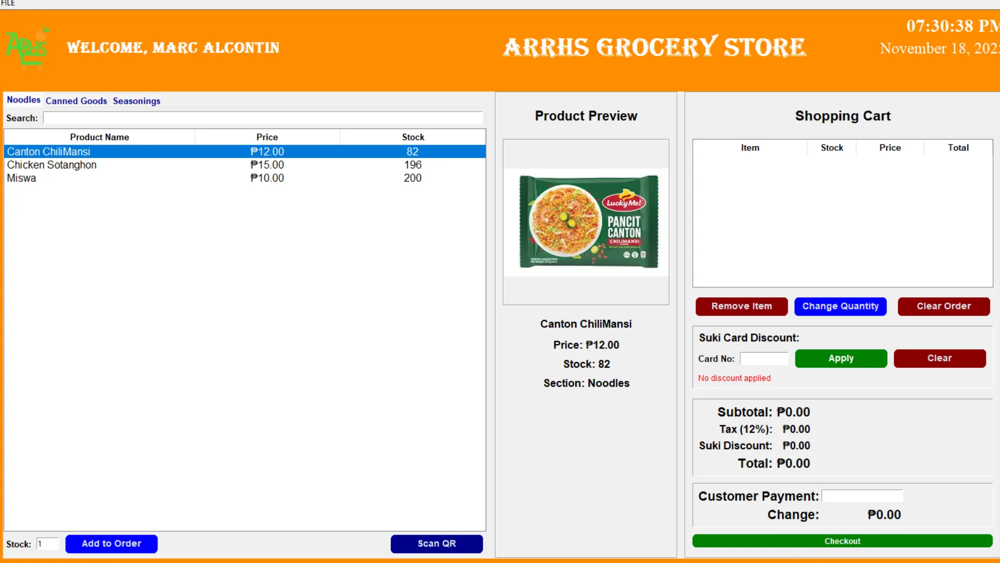
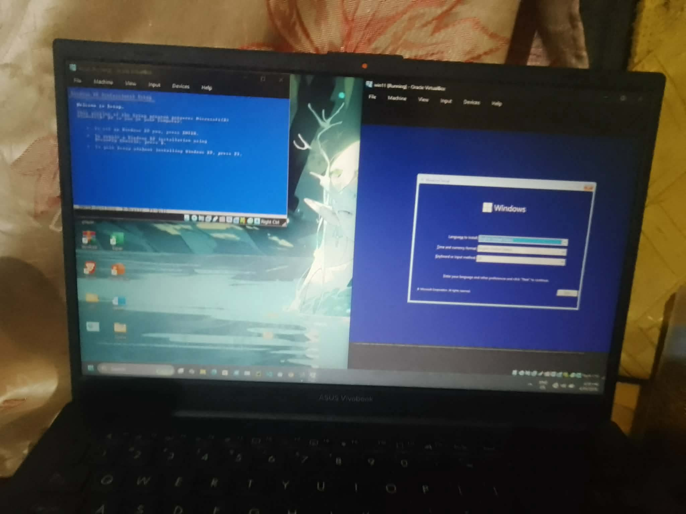
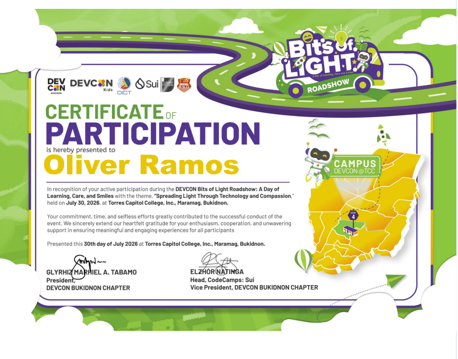
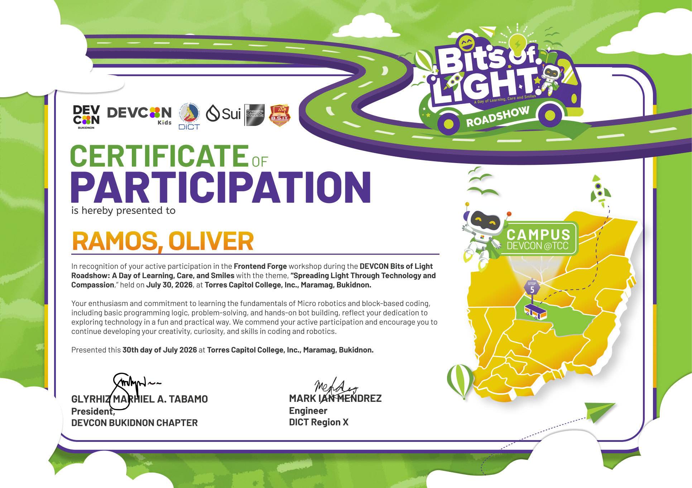
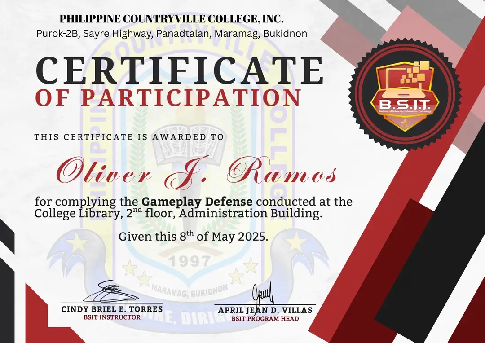
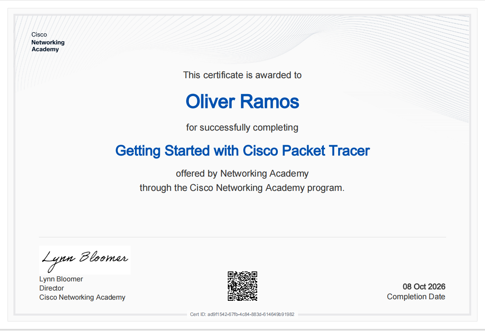

PROJECT 01AcademicGrading System
A student grading application concept for organizing grades and making academic record handling more efficient.
Ask about this project ↗I'm a third-year Bachelor of Science in Information Technology student who enjoys learning how technology works—from software development to hands-on computer setup and troubleshooting.
Curiosity is where every good project starts.
I'm Oliver J. Ramos, a third-year BSIT student at Torres Capitol College, Inc. I'm building a strong foundation in programming, productivity tools, and computer systems while exploring how technology can solve everyday problems.
I enjoy turning ideas into practical projects, learning new tools, and improving through hands-on experience. My goal is to keep growing as an IT professional, one project and one new skill at a time.
I like breaking challenges into manageable steps.
Building knowledge through coursework and practice.
Interested in both software and computer systems.
A growing toolkit for creating, solving, and learning.
Documents, data, and presentations
Core concepts and application building
Hands-on and technical skills
✦ Skill levels develop with every class, experiment, and project.
Academic and hands-on projects that reflect what I'm learning.

PROJECT 01AcademicA student grading application concept for organizing grades and making academic record handling more efficient.
Ask about this project ↗
PROJECT 02ApplicationA point-of-sale system concept designed to support product checkout, transaction recording, and basic store operations.
Ask about this project ↗
PROJECT 03TechnicalA hands-on technical task involving operating system installation and the essential setup steps for a usable computer.
Ask about this project ↗Knowledge gained through events, activities, and technical learning.

DEVCONSUICodeCamp_BitsofLight.

DEVCONSUICodeCamp_BitsofLight.

Torres Capitol College,Inc.

Cisco Networking Academy.
Building a foundation for the next chapter.
Bachelor of Science in Information Technology (BSIT)
Third-year student · Developing skills in programming, information systems, and computer technology.
I'm continuing to learn and looking forward to new opportunities, collaborations, and challenges.